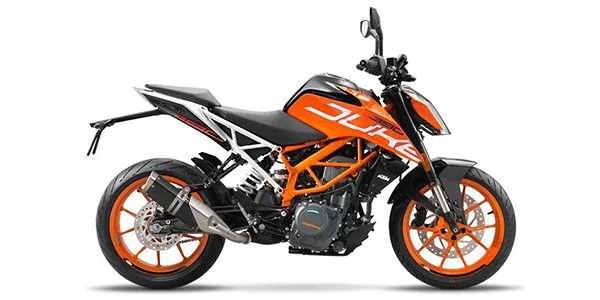
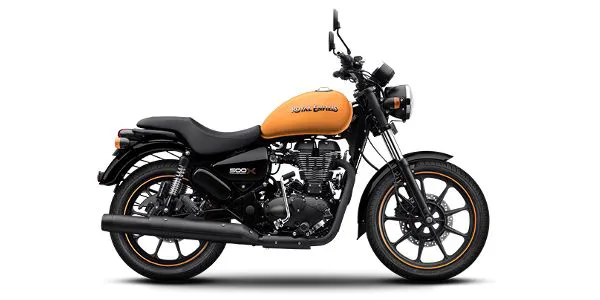
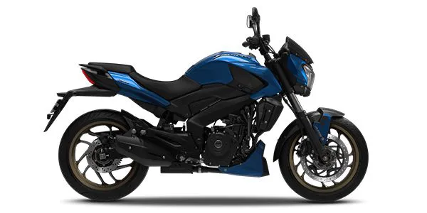
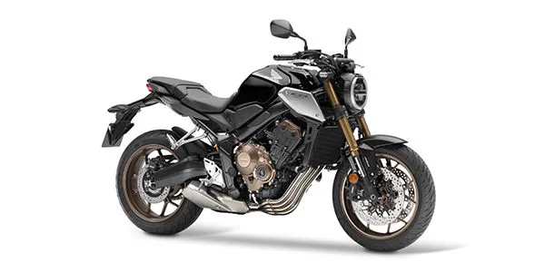

Speaking of the bike itself,the 2017 model gets a complete redesign with full LED headlamps, a revised BSIV motor, new exhaust, ride-by-wire and a colour TFT tablet-type instrument console. The 390 Duke should offer the best performance under the Rs 2.5 lakh price bracket owing to the high-performance 373cc engine and the lightweight chassis and bodywork. The bike also gets a host of first-in-class features like a colour TFT screen, standard switchable ABS and slipper clutch. The 390 Duke is priced at Rs 2.26 lakh (ex-Delhi). The bike faces competition from the Benelli TNT 300 and Kawasaki Z250 which are priced way higher. The 2017 KTM 390 Duke should be able to hold the crown of the best sports bike under the Rs 3 lakh price bracket.
Price tag - Rs 2.26 lakh (ex-Delhi)
Royal Enfield has launched the Thunderbird 500X with the safety net of dual-channel ABS. Priced at Rs Rs 2.13 lakh (ex-showroom Delhi), it commands a premium of around Rs 15,000 over the non-ABS variant. The Thunderbird 500X is a modern take on Royal Enfield’s Thunderbird cruiser. The bike stands out from the current pack thanks to blacked out parts and contrasting bright paintwork. The Royal Enfield Thunderbird 500X retains the same 499cc, air-cooled, single-cylinder motor of the Thunderbird 500. It produces 27.5PS at 5250rpm and 41.3Nm of torque at 4000rpm. Suspension duties are handled by telescopic front forks and twin gas-charged shocks at the rear. Anchoring the bike are disc brakes at both ends. At a price tag of Rs 2.13 lakh, the Thunderbird 500X competes against theBajaj Dominar, Mahindra Mojo and the soon-to-be-launched Jawa Perak.
Price tag - Rs 2.13 lakh (ex-Delhi)
Bajaj will be launching the all-new 2019 Dominar sometime in February. The updated motorcycle is expected to come with a host of changes including twin-port exhaust design paired with a reworked catalytic converter, USD forks and a revised layout for its dual-digital instrument console. The bike is also expected to comply with BS-VI emission norms.We expect it to receive a price bump of Rs 15,000 to Rs 20,000 over its current pricing.The Dominar comes with a slipper clutch as a standard feature and the ABS version is priced at Rs 1.62 lakh (Ex-DeBAJAJ DOMINAR 400/p> 
Price tag - Rs 1.62 lakh (ex-Delhi)
The new Honda CBR650R gets a complete makeover and looks like a smaller version of Honda’s flagship litre-class superbike, the CBR1000RR. Features include new twin LED headlamps and a fully-digital instrument console that replaces the dated twin-pod digital instrument cluster seen on the CBR650F. The 649cc, liquid-cooled, inline-four engine has been updated for translates a stronger mid-range and a higher revving motor. It now makes 95PS at 12,000rpm and 64Nm at 8500rpm. You now get a slipper clutch. Electronics include multi-stage traction control. The new bike weighs 6kg less thanks to a lighter frame and smaller fuel tank. Suspension updates include Showa Separate Function upside-down front forks and a preload-adjustable rear monoshock. Its 310mm twin front discs get new radially mounted Nissin four-pot calipers while the rear gets a larger 240mm disc. The CBR650F does not have any direct competitors here and the only one that comes close is the Kawasaki Ninja 650 that is priced at Rs 5.49 lakh (ex-showroom).
Price tag - Rs 5.49 lakh (ex-Delhi)
For further queries,You can contact our experts:
Mobile No:8156939162
Gmail: motodel@gmail.com